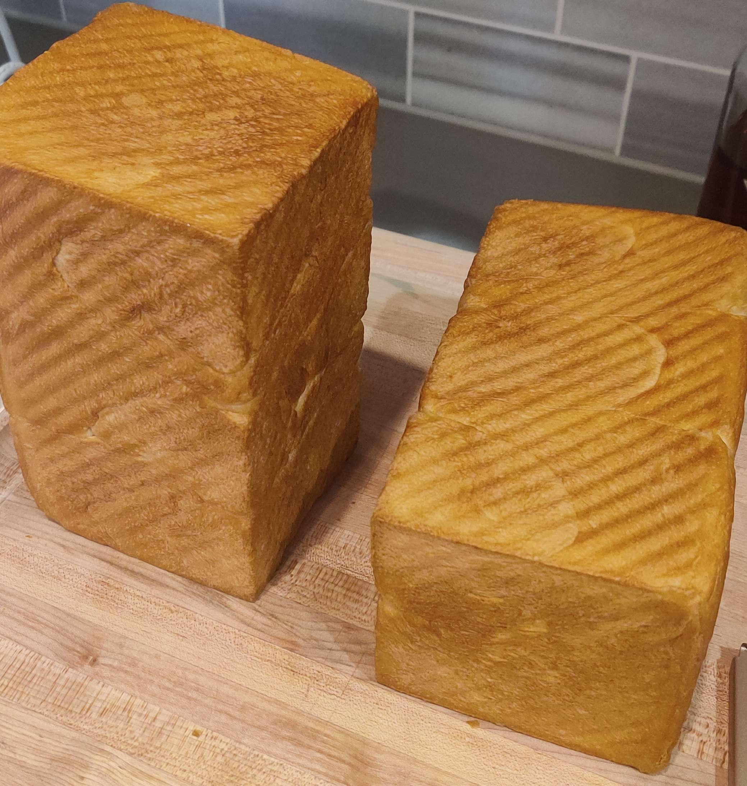

shokupan

Shokupan is a Japanese-style bread that is known for its soft and fluffy texture. It is made using high-quality wheat flour,
yeast, sugar, salt, and milk, which gives it a slightly sweet flavor and a moist crumb. Shokupan is typically baked in a
rectangular loaf shape and has a light, airy texture that makes it perfect for sandwiches or simply enjoyed on its own. This
bread has become a popular staple in Japan and is now enjoyed by many people around the world.
Ingredients
------------------------------------------
Dough:
- 540 g Bread flour
- 220 g Whole Milk
- 140 g Heavy whipping cream
- 1 Large egg
- 50 g Sugar
- 6 g Instant Dry Yeast
- 5 g Salt
Steps
- In a large mixing bowl, combine all the listed ingredients except for the salt.
- After adding all the ingredients, add the salt in.
- Knead the dough until you achieve the 'screen door' effect on the dough where it becomes translucent enough to see light.
- Place the dough in a clean bowl and cover it with a damp cloth. Let it rise in a warm place for 1-2 hours until it has doubled in size.
- Divide the dough into two equal portions and divide each of those into three balls.
- Roll each of the balls (there should be 6) into an oval and fold the sides in; flatten the dough then roll them up and place three of them into a pullman loaf pan
- Place the dough in greased loaf pans and cover them with a damp cloth. Let them rise again in a warm place for 30-60 minutes until they have risen to the top of the pans.
- Preheat your oven to 392°F (200°C).
- Bake the loaves in the preheated oven for 30 minutes.
- Remove the loaves from the oven and remove them from the pan to let it cool
- Once the loaves are cool, slice and serve as desired.